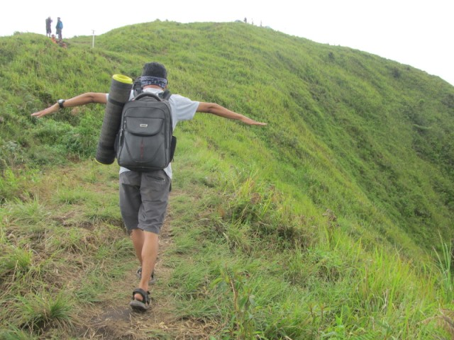

All About Life
kumpulan artikel-artikel kehidupan sehari-hari
Andong
Jika kamu sedang mencari gunung yang ideal untuk pemula, salah satu opsi yang bisa kamu pilih adalah Gunung
Andong. Meski sudah sangat mainstream, menjadikan Gunung Andong sebagai tujuan pendakian bukanlah pilihan yang salah. Apalagi untuk pemula
Gunung Andong secara administratif masuk wilayah Kabupaten Magelang namun lebih dekat jika diakses dari Kota Salatiga via Kopeng.
Nama Gunung Andong semakin melejit karna meskipun mungil namun gunung ini memiliki pemandangan yang aduhai
Tinggi maksimal Gunung Andong hanya 1.726 mdpl. Meskipun demikian, mendaki Gunung Andong tanpa persiapan adalah hal yang keliru. Untuk sampai ke puncak kita memang hanya membutuhkan waktu kurang dari 3 jam, namun track Gunung Andong cukup curam. Untuk yang belum terbiasa mendaki gunung, hal ini akan cukup merepotkan. Di sepanjang jalur pendakian juga tidak ada shelter untuk mendirikan tenda jadi mau tak mau kita harus sampai ke puncak
Seperti yang sudah disinggung di atas, tinggi maksimal Gunung Andong hanya 1.726 mdpl. Dengan tinggi segitu kita hanya membutuhkan waktu sekitar 2 jam untuk sampai ke puncak. Track yang akan kita lewati sepenuhnya merupakan tanah liat, tak ada track pasir sama sekali. Kemiringan track Gunung Andong sekitar 45 derajat dan konstan. Kita tidak akan menemukan track datar sama sekali
Dengan kondisi track demikian — ditambah tinggi maskimalnya yang hanya 1.726 mdpl — Gunung Andong menjadi salah satu gunung yang paling ideal untuk para pendaki pemula. Sedangkan untuk pendaki yang sudah berpengalaman, Gunung Andong bisa dijadikan objek pelepas rindu jika keinginan untuk mendaki sudah di ubun-ubun sementara keadaan belum memungkinkan untuk mendaki gunung yang lebih tinggi dengan track yang lebih kompleks
Sejak ada Instragram dan media sosial lain, nama Gunung Andong semakin tenar. Mereka yang tadinya belum tahu tentang gunung ini mendadak jadi tahu. Mendengar fakta bahwa tinggi Gunung Andong hanya 1.726 mdpl, mereka yang tadinya tidak suka mendaki gunung mendadak menjadi suka. Banyak orang yang pada akhirnya juga ingin menikmati keindahan Gunung Andong
Tak heran kalau Gunung Andong tak pernah sepi dari kunjungan pendaki. Bahkan saat weekend, kita mungkin akan sangat kesulitan menemukan tempat kosong untuk mendirikan tenda. Sebelum seramai sekarang, dulu hanya ada satu jalur pendakian ke Gunung Andong yakni melalui Desa Sawit. Namun, saat ini sudah dibuka jalur lain melalui sisi sebelah timur
Memang benar bahwa tinggi Gunung Andong hanya 1.726 mdpl. Namun, kondisi track yang curam cukup untuk membuat kaki merasa pegal. Jadi, kalau ingin mendaki Gunung Andong kita tetap membutuhkan persiapan fisik. Terutama kalau kamu belum pernah mendaki gunung sama sekali
Puncak Gunung Andong berbentuk memanjang dari barat ke timur. Di sepanjang bentangan puncak tersebut terdapat beberapa titik yang dianggap sebagai puncak. Terhitung ada 4 puncak yang akan kita temukan di Gunung Andong. Dari yang paling barat ada Puncak Makam kemudian Puncak Jiwa, Puncak Andong dan Puncak Alap-alap (paling timur). Puncak Andong merupakan titik tertinggi di Gunung Andong. Dari masing-masing puncak tersebut kita akan disuguhi pemandangan alam yang indah
Tugas Praktikum Desain Web
Di kerjakan mulai: 12 Desember 2018
Whatsapp :082246399081
Website text and design is copyright.